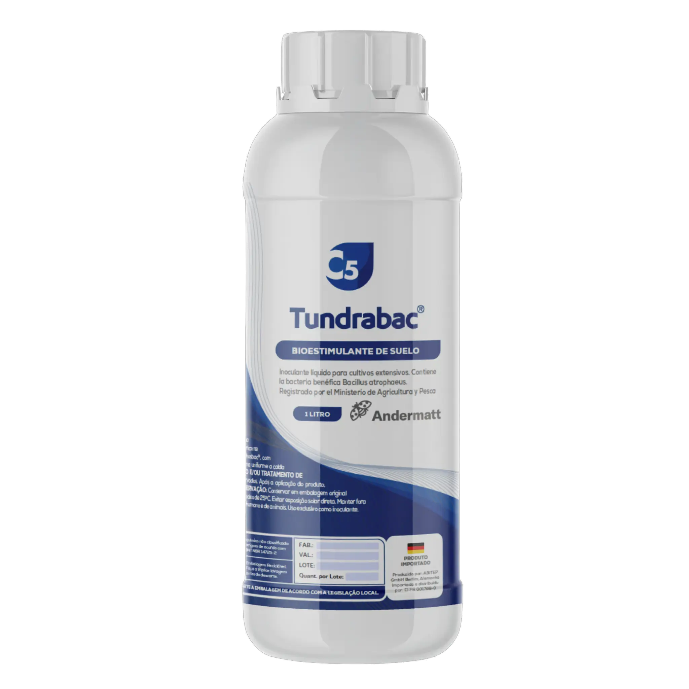

EL ÚNICO BIOESTIMULANTE QUE DESPIERTA TUS CEREALES DE INVIERNO.
La eficacia de nuestro producto exclusivo se basa en la cepa Bacillus atrophaeus ABi05, aislada originalmente de los Alpes suizos y seleccionada por su capacidad única de activarse a bajas temperaturas, una característica protegida por patente.
Tundrabac le da a su cultivo de invierno la ventaja decisiva para un desarrollo inicial robusto y un mayor potencial de rendimiento.

Arranque Superior en Condiciones de Frío.
Tundrabac le da a su cultivo de invierno la ventaja decisiva para un desarrollo inicial robusto y un mayor potencial de rendimiento.
Arranque en Frío
Es el único inoculante para cereales que se activa desde los 8°C de temperatura de suelo, permitiendo una emergencia vigorosa y uniforme en siembras tempranas.
Emergencia Uniforme
Promueve una germinación más rápida y pareja, logrando un mayor stand de plantas y un cultivo homogéneo desde el inicio.
Máximo Desarrollo Radicular
Bioestimula la producción de raíces más fuertes, mejorando la captación de agua y nutrientes clave para el macollaje.
Más Potencial de Rinde
Un mejor establecimiento y una nutrición eficiente se traducen en plantas más resilientes con mayor capacidad productiva.
Tecnología Patentada para el Frío
La eficacia de Tundrabac se basa en la cepa Bacillus atrophaeus ABi05, aislada originalmente de los Alpes suizos y seleccionada por su capacidad única de activarse a bajas temperaturas, una característica protegida por patente.
Patente Mundial N° WO2016165685A1
La patente confirma la novedad de la cepa ABi05 por su capacidad de germinar y colonizar las raíces a temperaturas tan bajas como 8°C. Esto le confiere una ventaja decisiva en cultivos de invierno, donde las temperaturas del suelo limitan la actividad de otros microorganismos.
Ver patente en Google Patents →Resultados en Cereales de Invierno
Ensayos a campo demuestran cómo Tundrabac protege y aumenta el potencial de rinde en trigo y cebada.
Especificaciones
| Ingrediente Activo | Bacillus atrophaeus Cepa ABi05 |
| Formulación | Suspensión concentrada de endosporas |
| Dosis Recomendada | 0,25 - 0,5 ml por kg de semilla |
| Cultivos | Trigo, Cebada |
| Almacenamiento | 2 años a temperatura ambiente |
| Registro SENASA | N° 60.971-BIO |
| Compatibilidad | Alta compatibilidad con fungicidas e insecticidas. Consulte a su asesor. |

Origen Alemán. Confianza Suiza.
La tecnología detrás de Tundrabac proviene de ABiTEP GmbH en Berlín, Alemania, pioneros en el desarrollo de bioestimulantes a base de Bacillus. ABiTEP GmbH es propiedad del grupo Andermatt, líder suizo en soluciones biológicas, garantizando los más altos estándares de calidad y resultados a campo.
Conocer más sobre Andermatt¿Listo para un Arranque Invernal Superior?
Contacte a nuestro equipo técnico para incorporar Tundrabac a su programa de tratamiento de semillas y asegure el máximo potencial para su trigo y cebada.
Contactar a un Experto